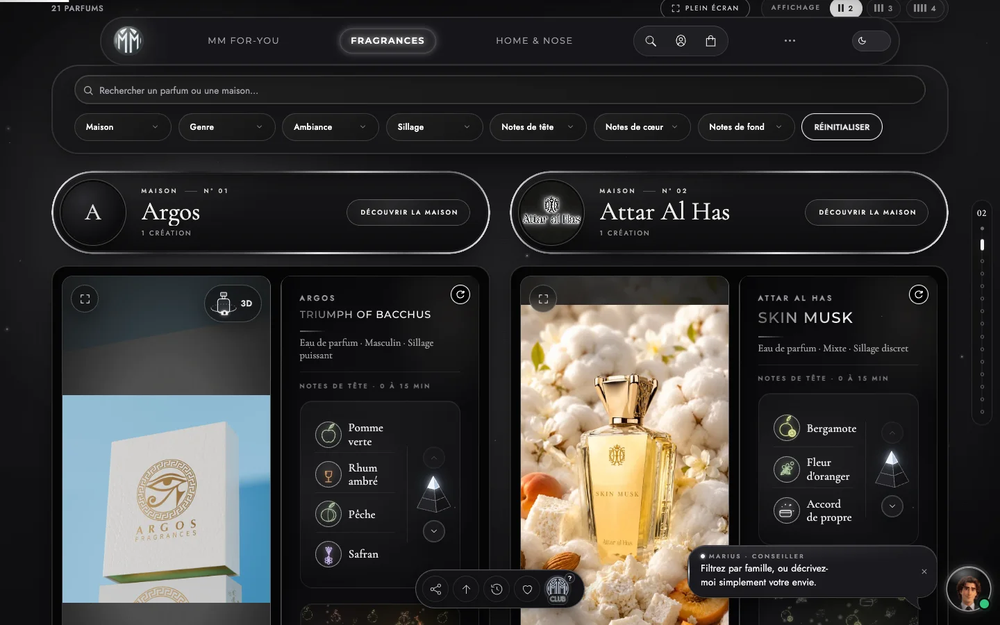
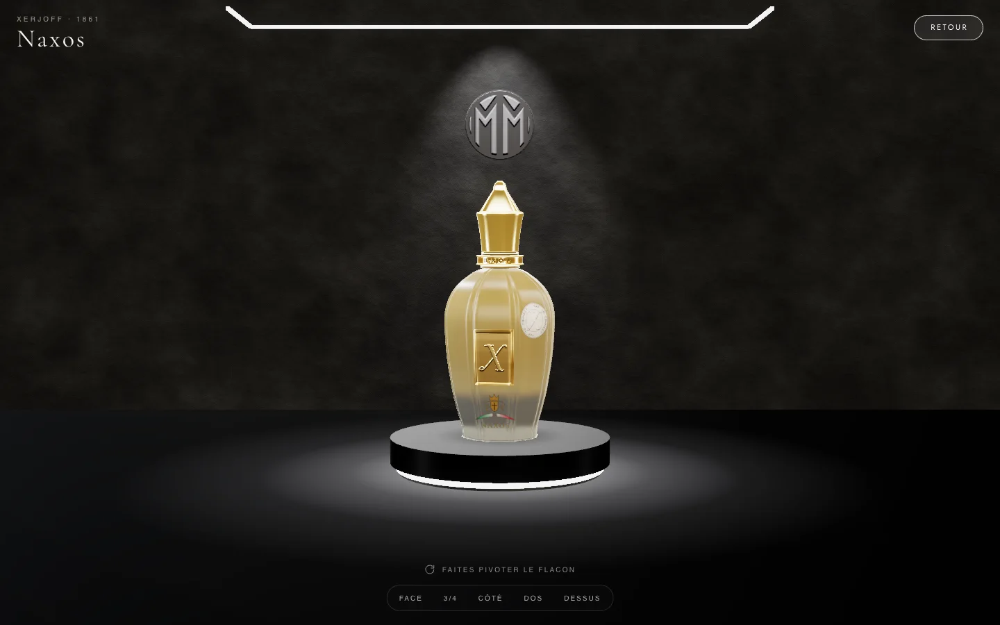
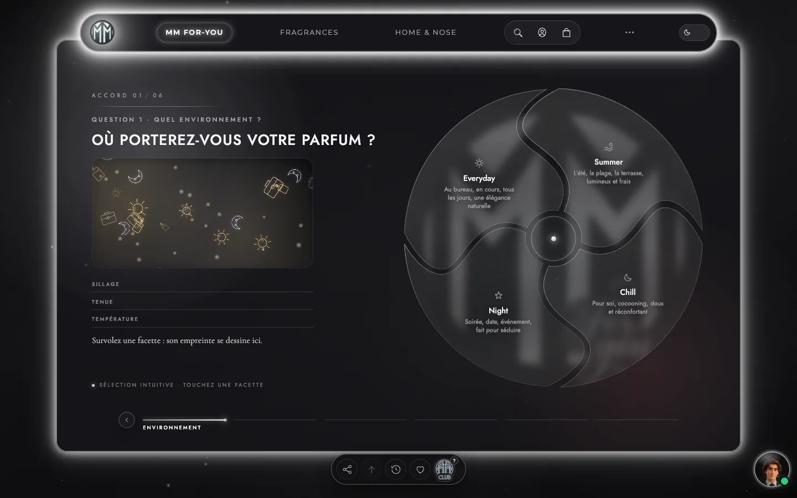
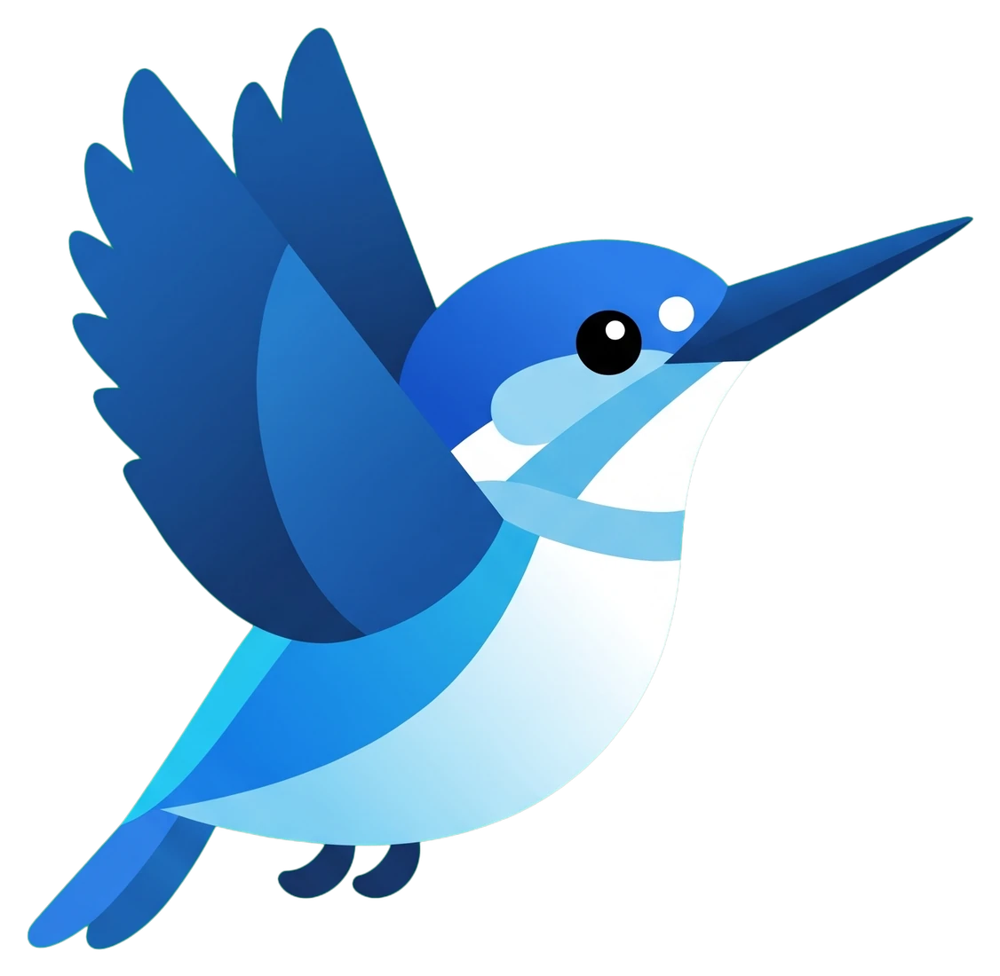

Étude de cas · Boutique en ligne
MM Fragrances, parfumerie de niche en ligne
Une maison de parfums de niche voulait une boutique qui donne envie de sentir à travers l'écran. Le studio a conçu un site en clair-obscur, avec des flacons en 3D, un quiz et un conseiller virtuel.
- ProjetBoutique en ligne
- LivréDesign, développement, animations
- ÉcransOrdinateur et téléphone

Le point de départ
Faire ressentir un parfum, sans pouvoir le sentir.
En ligne, un parfum se résume souvent à une photo de flacon et une liste de notes. La maison voulait que la visite ressemble à un passage en boutique : de la lumière, de la matière, et quelqu'un pour conseiller. Le catalogue se filtre par maison, genre, ambiance, sillage et notes de tête, de cœur et de fond.


Les flacons en 3D
Le flacon tourne sous la lumière.
Chaque flacon a sa propre page en 3D, sous un projecteur : on le fait pivoter, ou on passe d'un clic de la face au côté, au dos et au dessus.
Le quiz
Trouver son parfum en quelques questions.
Six questions, une à la fois : où on le portera, la note qu'on ne supporte pas, le sillage, l'aura, la touche finale et le budget. À la fin, le visiteur reçoit sa signature sur-mesure plutôt que le catalogue entier.

Sur téléphone
Le même soin, dans la poche.
Le site a été dessiné pour le téléphone autant que pour l'ordinateur : fiches produit lisibles d'une main, conseiller virtuel accessible en bas de l'écran.



Un projet en tête ?
Dites ce que vous vendez et ce qui coince aujourd'hui. Le premier échange est gratuit, et vous repartez avec des pistes concrètes.